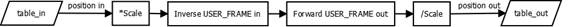

Mathematical Function
USER_FRAME_TRANS(user_frame_in, user_frame_out, tool_offset_in, tool_offset_out, table_in, table_out, [scale])
This function enables you to transform a set of positions from one frame to another. This could be used to take a set of positions from a vision system and transform them so that they are a set of positions relative to a conveyor.
USER_FRAME_TRANS requires the kinematic runtime FEC
It is required to set-up a FRAME_GROUP and USER_FRAME to use this function. If you do not wish to set up a FRAME_GROUP with real axis you can use virtual.
The USER_FRAME calculations are performed on raw position data which are integers. The table data is scaled by the scale parameter, for optimal resolution scale should be set to the UNITS of the robot.

As all the USER_FRAME transformations use the same coordinate scale it does not matter if the positions are supplied as raw positions or scaled by UNITS .
|
user_frame_in: |
The USER_FRAME identity that the points are supplied in |
|
user_frame_out: |
The USER_FRAME identity that the points are transformed to |
|
tool_offset_in: |
The TOOL_OFFSET identity that the points are supplied in |
|
tool_offset_out: |
The TOOL_OFFSET identity that the points are transformed to |
|
table_in: |
The start of the input positions |
|
table_out: |
The start of the generated positions |
|
scale: |
This parameter allows you to scale the table values (default 1000) |
The table_in requires 12 values. Any that are not required should be set to zero for position and 1 for scale.
|
table_in |
First axis position |
|
table_in +1 |
Second axis position |
|
table_in +2 |
Third axis position |
|
table_in +3 |
Fourth axis position |
|
table_in +4 |
Fifth axis position |
|
table_in +5 |
Sixth axis position |
|
table_in +6 |
First axis FRAME_SCALE |
|
table_in +7 |
Second axis FRAME_SCALE |
|
table_in +8 |
Third axis FRAME_SCALE |
|
table_in +9 |
Fourth axis FRAME_SCALE |
|
table_in +10 |
Fifth axis FRAME_SCALE |
|
table_in +11 |
Sixth axis FRAME_SCALE |
USER_FRAME (vision) has been configured to the vision system relative to the robot origin. The conveyor has been configures in USER_FRAME (conveyor). To use the vision system positions on the conveyor USER_FRAME they must be transformed through USER_FRAME_TRANS.
USER_FRAME_TRANS(vision, conveyor, 0, 0, 200,300)